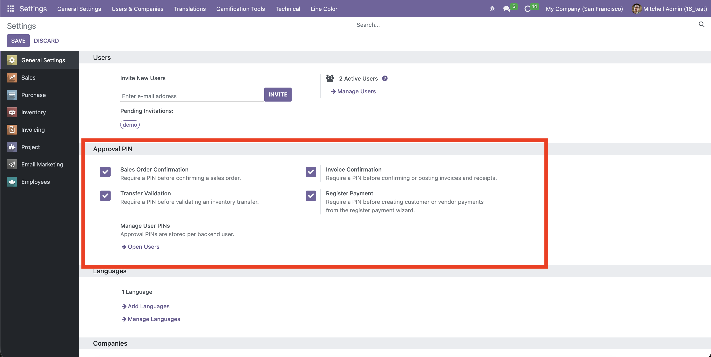
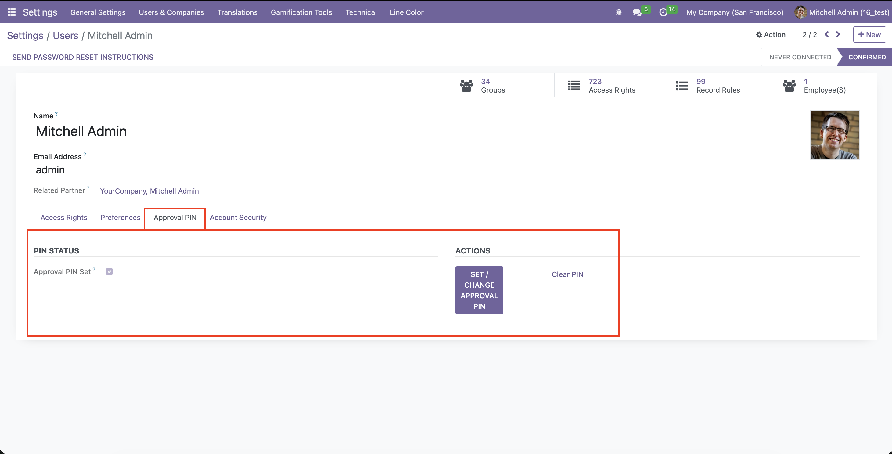
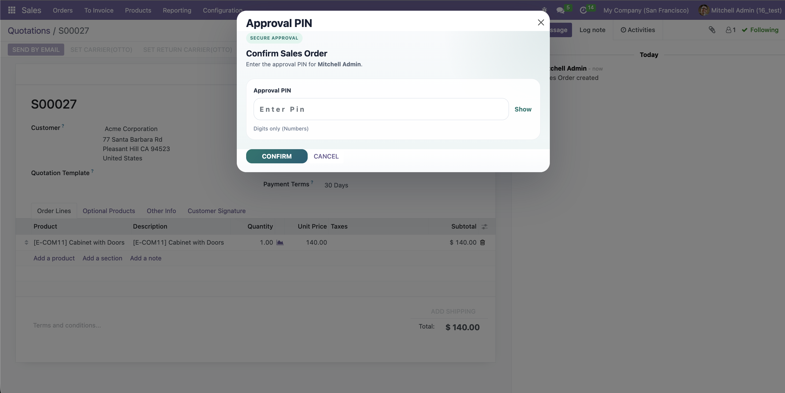
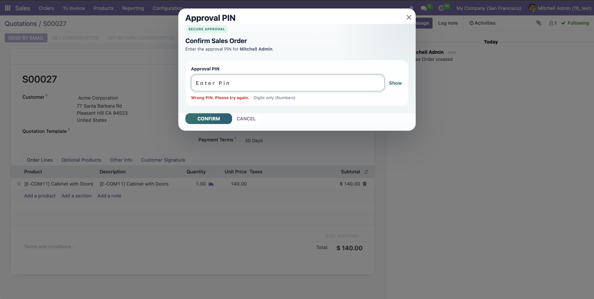

Step 1: Configure protected actions
Enable PIN protection independently for Sales Order confirmation, Invoice posting, Inventory Transfer validation, and Register Payment.

Step 2: Set user approval PINs
Administrators can manage approval PINs per backend user, so each user has their own secure approval code.

Step 3: Confirm with approval PIN
When a protected action is clicked, users enter their approval PIN before the original Odoo action continues.

Step 4: Clear wrong PIN feedback
Wrong PIN attempts show a clear inline warning, keeping the user inside the same approval popup.

- Require a PIN before confirming Sales Orders.
- Require a PIN before confirming or posting customer/vendor invoices.
- Require a PIN before validating Inventory Transfers.
- Require a PIN before creating payments from the Register Payment popup.
- Enable or disable each protected workflow independently from Settings.
- Store and manage approval PINs per backend user.
- Clean approval popup with show/hide PIN and inline wrong-PIN feedback.
Q: Is Odoo 16 Community and Enterprise supported?
A: Yes, both editions are supported when the related Odoo apps are installed.
Q: Can I protect only one action?
A: Yes, sales, invoices, transfers, and payments can be enabled independently.
Q: Are PINs shared across users?
A: No, each backend user can have a separate approval PIN.
v16.0.1.0.0- Odoo 16 package release.
- Sales, Accounting, Inventory, and Register Payment approval flows included.
- Spanish and Peru Spanish translations included.